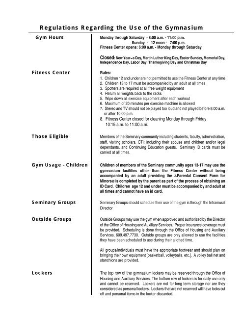

Oregon's New Body Testing Disclosure Law: What It Means for Your Gym# #24 Oregon's New Body Testing Disclosure Law: What It Means for Your Gym She spent maybe $200 on the whole setup.
In early 2026, Oregon passed a first‑of‑its‑kind law. It requires any fitness facility that offers body composition testing to disclose the accuracy range and limitations of the method. No more selling $200 DEXA scans without telling you the error margin. No more BIA scales that claim to be “medical grade” without context. I’ve been in this industry long enough to know why this law exists. I’ve seen gyms sell expensive BIA scans as “accurate within 1%” when the fine print said 5%. I’ve seen personal trainers use handheld BIA devices without mentioning hydration, food, or exercise. I’ve seen clients make diet and training decisions based on numbers that were wrong. The BMI vs Body Fat Analyzer follows this transparency principle.
What the law requires
The Oregon Body Testing Disclosure Law (HB 2026‑04) has four main provisions. Okay. any fitness facility offering body composition testing must provide a written disclosure of the method’s accuracy, expressed as a percentage (±X%). No more hiding behind “clinical grade” or “research validated” without numbers. Next, the disclosure must include factors that affect accuracy – hydration, food intake, excercise, time of day, menstrual cycle, and any other known confounders. Also, the disclosure must state the method’s limitations. For example, consumer BIA scales measure only the lower body. Handheld BIA devices measure only the upper body. DEXA exposes you to a small amount of radiation. These facts must be disclosed. And then, facilities cannot claim that a method is “medical grade” or “gold standard” unless it meets specific criteria. DEXA can call itself gold standard. A $40 BIA scale cannot. The Bioelectrical Impedance Guide explains why these disclosures matter.
Why the law is necessary I’ve seen too many people hurt by inaccurate testing. A client named Lisa was told by her gym’s BIA scale that her body fat was 35%. She cut calories to 1,200 a day. She lost muscle. She felt terrible. Six months later, a DEXA showed 28%. The gym’s scale was off by 7%. But the damage was done. Another client, a bodybuilder named Mike, was told his body fat was 8% by a handheld BIA device. He was preparing for a competition. His coach adjusted his nutrition based on that number. The actual DEXA a week later showed 12%. He had been under‑eating for weeks. His performance suffered. The law requires gyms to disclose that BIA can swing 3-5% with hydration. It requires them to tell you that a consumer BIA scale has an error of 5-8%. It requires them to tell you that DEXA has radiation, even though the dose is tiny. What gyms must now tell you
Averages lie. Distributions tell the truth.
Before you pay for any body composition test in Oregon, the gym must provide:
The method’s name (DEXA, BIA, skinfold, etc.) The error range (e.g., ±5%)
A list of factors that affect accuracy (hydration, food, exercise, time of day) Whether the device measures full body or just segments
For DEXA, the radiation dose in μSv If the gym can’t provide these things, they can’t legally offer the test. How to use the law as a consumer
Ask for the disclosure. If the gym looks confused, they’re violating the law. Report them to the Oregon Department of Justice. Don’t pay for a test that doesn’t come with error disclosure. A body fat percentage without an error range is meaningless. What the law doesn’t do Still counts.
It doesn’t ban any method. Gyms can still use consumer BIA scales. They just have to tell you the truth about them. It doesn’t require gyms to offer free testing. They can still charge. It doesn’t apply to medical clinics. Only fitness facilities. The future of body testing regulation
Oregon is the first, but other states are watching. California has a similar bill in committee. New York is considering one. The trend is toward transparency. I support this law. I’ve been pushing for transparency for years. My tools have always shown error ranges. The Bioelectrical Impedance Guide is free. The Body Fat Percentage Estimator shows error ranges. What you can do If you live in Oregon, ask your gym for their disclosure. If they don’t have it, tell them about the law. If you don’t live in Oregon, ask anyway. “What’s the error range on this test? What factors affect it?” A good gym will know. A bad gym will deflect. The BMI vs Body Fat Analyzer is free. It’s transparent. It shows you the mismatch between BMI and body fat. Use it before you pay for a test. The bottom line
The confidence interval is wider than the headline suggests.
Body composition testing is useful. But only if you understand the numbers. The Oregon law forces gyms to be honest. A client named Rachel told me she used to pay $50 every month for a BIA scan at her gym. She had no idea the error was 6%. She was making diet changes based on noise, not signal.
After I explained the law, she asked her gym for the disclosure. They gave her a paper. She saw the error range. She stopped paying for the test. She bought calipers instead. “I was throwing away money,” she said. “Now I track my own progress.”